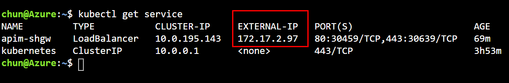
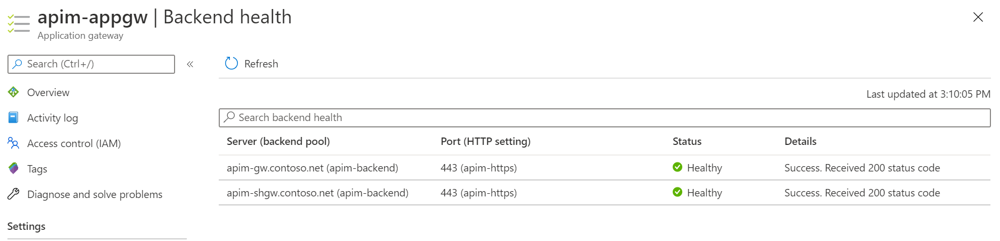

About
Here are some articles and posts that I wrote but don't know where to park. They are all about Azure.
The site is built with mdbook.
Let me know your feedback, suggestions or issues: issues on GitHub
Tutorials - Integrate Application Gateway, API Management and Self-Hosted Gateway in internal virtual network
Overview
An API Management (APIM) instance can be deployed in a virtual network (VNET) in Internal mode and then integrated with an Azure Application Gateway (AppGW) to provide access to both internal and external users. We can expand the APIM instance further with a self-hosted gateway to extend the capacity and the redundancy of the APIM.
In this series of tutorials, we discuss how to integrate an AppGW with an APIM instance and a self-hosted gateway in an virtual network in internal mode. You will learn the detailed process and steps, as well as things and issues you may need to pay attention.
The following diagram shows the components we will deploy in the tutorials. It is not meant to be a reference architecture of APIM, but just to show you what the deployment would look like. As the purpose of the tutorials is to show the possibility and how-to for such a deployment, we start the deployment from scratch and do it step by step.

The deployment can be automated with ARM template or Azure PowerShell module. We use Azure Portal in the tutorials to better illustrate the process and the steps. To keep our focus on the integration of APIM and to make it easier for illustration, we only use the built-in Echo API for testing. There is no additional backend API.
Prepare the virtual network environment
In this tutorial, you learn to:
- ✅ Create a virtual network with 3 subnets
- ✅ Create a private DNS zone and link it to the virtual network
- ✅ Create an API Management instance
Create the virtual network
As the first step, we create a virtual network with 3 subnets.
- Open Azure Portal, click Resource Groups.
- Click Add to add a new resource group.
- Give the resource group a name, e.g.
apim-rg, and choose a region such as East US. Click Review + create button, and then click Create. - When the resource group is create, click Go to resource group to open it.
- On the resource group page, click Add to add a new resource.
- In the search box, input
Virtual Network, click it from the dropdown and click Create. - Give the virtual network a name, e.g.
apim-vnet, and choose the same region of the resource group. Click Next: IP Addresses. - Input CIDR for IPv4 address space, such as
172.17.0.0/16, and add the following 3 subnets.
| Subnet name | Subnet address range |
|---|---|
| apim-subnet | 172.17.0.0/24 |
| appgw-subnet | 172.17.1.0/24 |
| aks-subnet | 172.17.2.0/24 |
- Click Review + create and then click Create to create the virtual network.
Configure the Private DNS Zone
When you deploy API Management in a virtual network in Internal mode, all its service endpoints are only visible within the virtual network. The default domain name of API Management, azure-api.net, which is managed by Azure, cannot be used to access the service endpoints anymore. As API Management service only responds to requests to the host name configured on its service endpoints and it does not listen to requests coming from IP addresses, you need to configure custom domain names for the endpoints, and therefore need a DNS service in the virtual network to manage the custom domain names.
In the tutorials, we use a Private DNS Zone to manage the custom domain names.
- In Azure Portal, go to the apim-rg resource group. Click Add to add a new resource.
- In the search box, input
Private DNS Zone, click it on the dropdown and click Create. - Make sure apim-rg is selected as the resource group.
- Input a top level domain name for Name. For example, we use
contoso.netfor it in the tutorials. - Click Review + create and then click Create to create the zone.
- When the zone is created, click Go to resource to open it.
- Click Virtual network links and then click Add to link it to the virtual network.

- Give the link a name, e.g.
apim-vnet-link, chooseapim-vnetand check Enable auto registration. Click OK.
Create the API Management instance
In the apim-rg resource group, create an API Management instance. For more details, please see Create a new Azure API Management service instance.
Please make sure you choose East US for the region which is the same as the virtual network, and choose either Developer or Premium for the Pricing tier. Only these two tiers support the virtual network integration.
When the APIM instance is created, all steps in this tutorial are completed. Let's move to the next one.
Connect API Management to virtual network in Internal mode
In the previous tutorial, you created the virtual network, the private DNS zone and the API Management instance. In this tutorial, we continue connecting the API Management instance to the virtual network in Internal mode.
In this tutorial, you learn to:
- ✅ Connect the APIM instance in the virtual network in Internal mode
- ✅ Create custom domain names in the private DNS zone
- ✅ Create self-signed certificates with PowerShell script
- ✅ Configure the APIM instance with custom domain names
Connect APIM instance to the VNET in Internal mode
-
In Azure Portal, open the APIM instance you created in the previous tutorial.
-
Click Virtual network under Deployment and infrastructure to open the VNET integration page.
-
Choose Internal for Virtual network and click the VNET option below to choose the VNET and the subnet.
-
Choose apim-vnet for the virtual network and apim-subnet for the subnet. Click Apply.

-
Click Save to apply the changes. The changes could take 15 to 45 minutes to be applied.
-
When the APIM instance is deployed in the VNET successfully, you can find the private and public virtual IP addresses for the APIM instance on the Overview page. Take a note for the private IP address. We need to use it later.
For more information about the impact of the VNET Internal mode, please see this document.
Create custom domain names
With VNET Internal mode, we need to configure the APIM instance with custom domain names before we can access its service endpoints. In our scenarios, we need at least 2 domain names, one for the Gateway endpoint and the other for the Management endpoint.
- In Azure Portal, open the private DNS zone contoso.net.
- Click Record set to add a new record set.
- Create the record set with Name:
apim-gwand IP address:172.17.0.5which is the private IP address we get in previous steps.
- Repeat the steps to create another record set with Name:
apim-mgmtand IP address:172.17.0.5.
Create self-signed certificates for SSL
We also need certificates for SSL bindings of APIM. In the production environment, you should use the certificates that are trusted by your organization. We use self-signed certificates in these tutorials just for demo purpose.
To make things easier, we create 2 certificates with the following PowerShell script. One of the certificates is a root certificate for signing, and the other is a wildcard certificate (CN=*.contoso.net) for SSL bindings of the custom domain names.
# Create the root signing cert
$root = New-SelfSignedCertificate -Type Custom -KeySpec Signature `
-Subject "CN=contoso-net-signing-root" -KeyExportPolicy Exportable `
-HashAlgorithm sha256 -KeyLength 4096 `
-CertStoreLocation "Cert:\CurrentUser\My" -KeyUsageProperty Sign `
-KeyUsage CertSign -NotAfter (get-date).AddYears(5)
# Create the wildcard SSL cert.
$ssl = New-SelfSignedCertificate -Type Custom -DnsName "*.contoso.net","contoso.net" `
-KeySpec Signature `
-Subject "CN=*.contoso.net" -KeyExportPolicy Exportable `
-HashAlgorithm sha256 -KeyLength 2048 `
-CertStoreLocation "Cert:\CurrentUser\My" `
-Signer $root
# Export CER of the root and SSL certs
Export-Certificate -Type CERT -Cert $root -FilePath .\contoso-signing-root.cer
Export-Certificate -Type CERT -Cert $ssl -FilePath .\contoso-ssl.cer
# Export PFX of the root and SSL certs
Export-PfxCertificate -Cert $root -FilePath .\contoso-signing-root.pfx `
-Password (read-host -AsSecureString -Prompt "password")
Export-PfxCertificate -Cert $ssl -FilePath .\contoso-ssl.pfx `
-ChainOption BuildChain -Password (read-host -AsSecureString -Prompt "password")
With the above script, you get the following 4 files.
- contoso-signing-root.cer
- contoso-signing-root.pfx
- contoso-ssl.cer
- contoso-ssl.pfx
Please note down the passwords you use for the PFX files. We need to use them later.
Configure custom domain names for the APIM instance
In the production environment, Azure Key Vault is recommended to manage the certificates. We use the Custom option in this tutorial. For more information about configuring custom domain, please see this document.
-
In the Azure Portal, go to the APIM instance.
-
Click Custom domains and click Add.
-
Configure the custom domain for the Gateway and Management endpoints with the following values.

| Type | Hostname | Certificate file | Password | Default SSL binding |
|---|---|---|---|---|
| Gateway | apim-gw.contoso.net | contoso-ssl.pfx | password of contoso-ssl.pfx | True |
| Management | apim-mgmt.contoso.net | contoso-ssl.pfx | password of contoso-ssl.pfx | True |
- Click Save to apply the changes.
The APIM instance is connected to the VNET in the Internal mode. You can move on to the next tutorial.
Integrate the APIM instance with Application Gateway
In the last tutorial, you connected the APIM instance to the VNET in Internal mode and configured the custom domain names for it. In this tutorial, we continue integrating the APIM instance with an Application Gateway.
In this tutorial, you learn to:
- ✅ Create Application Gateway
- ✅ Create the custom healthy probe for APIM
- ✅ Verify the integration
Create Application Gateway
-
In the Azure Portal, add a new resource by clicking Create a resource link.
-
Search and create
Application Gateway. -
Choose resource group
apim-rg, regionEast US, and give it a name such asapim-appgw. -
Choose VNET
apim-vnetand subnetappgw-subnet. Click Next: Frontends button. -
Choose
Publicfor the frontend IP and create a new public IP address. And then click Next: backend button. -
Add a backend pool as shown in the following diagram.

-
Move to Configuration and add a routing rule. The Listener of the routing rule is shown below.

-
Choose apim-backend as the Backend target, and add a new HTTP settings as shown below. Note that
contoso-signing-root.ceris used for CER certificate and Host name override is set to pick the name from backend.
-
Move to Tags and add tags if you want. Then move to Review + create.
-
Click Create to create the AppGW.
Create custom health probe
When the deployment of the AppGW is completed, if you go to the resource, you would notice that the backend status is unhealthy. That is because the default probe of AppGW doesn't work for APIM. We need to create a custom health probe for it.

-
Click Health probes and click Add to add a custom health probe. The details of the custom health probe are shown in the diagram below. Note the Protocol and host name settings. The Path of the APIM probe is
/status-0123456789abcdef.
-
Uncheck I want to test the backend health before adding the health probe option and click Add.
-
Go to Backend health and refresh. The status of the backend should be Healthy now.

Verify the integration
We can verify if the integration works by sending a request to the public IP address of the AppGW. We do it with Azure Cloud Shell in this tutorial. You can also do it with other tools such as Postman.
-
In the Azure Portal, open Azure Cloud Shell. Choose Bash for the shell.
-
Run the following command with
curl. You can find the subscription key of APIM on the Subscriptions page of APIM, and the public IP address of AppGW on the Overview page of AppGW.curl -I -H "Ocp-Apim-Subscription-Key: [subscription key]" http://[AppGW public IP]/echo/resource -
If everything works, you get
HTTP 200 OKin the response.
Now you've integrated the APIM instance with an AppGW. Let's move on to the next tutorial to expand the deployment further with a self-hosted gateway.
Deploy self-hosted gateway
In the previous tutorials, you've deployed the APIM instance in the internal VNET and integrated it with the AppGW. In this tutorial, we expand the deployment with a self-hosted gateway to extend the capacity and redundancy of the APIM instance.
In this tutorial, you learn to:
- ✅ Deploy an Azure Kubernetes Service (AKS) cluster in the VNET
- ✅ Deploy a self-hosted gateway in the AKS cluster
Deploy an AKS cluster to host the self-hosted gateway
The self-hosted gateway of APIM is a containerized, functionally-equivalent version of the managed gateway that is part of every APIM service deployed. It can be deployed to Docker, Kubernetes, or any other container orchestration solution running on a server cluster on premises, cloud infrastructure, or for evaluation and development purposes, on a personal computer. In this tutorial, we deploy an AKS cluster to host the self-hosted gateway.
Create a service principal and assign permissions
To allow the AKS cluster to access the VNET and subnet, we need to configure it with a service principal.
-
In the Azure Portal, open Cloud Shell and choose Bash as the shell.
-
Run the following command to create the service principal and take a note on the output. We need to use it later.
az ad sp create-for-rbac --skip-assignment -
Assign the service principal Network Contributor role to the VNET with the following command.
<appId>is the value ofappIdfrom the output of the above step.VNET_ID=$(az network vnet show --resource-group apim-rg --name apim-vnet --query id -o tsv) az role assignment create --assignee <appId> --scope $VNET_ID --role "Network Contributor"
Deploy the AKS cluster with Azure Portal
We deploy the AKS cluster to the VNET and the corresponding subnet. For details about the AKS networking, please see this document.
-
In the Azure Portal, add a new resource to the apim-rg resource group.
-
Search
Kubernetes Serviceand click Create. -
Choose resource group
apim-rg, regionEast USand give the cluster a name such asapim-aks. Accept other default settings and move to Next: Node pools. -
Accept default settings for node pools and move to Next: Authentication.
-
Choose Service principal as the Authentication method and click Configure service principal to configure it.
-
Choose Use existing, and input the client ID and client secret. They are the values of appID and password from the output of creating the service principal command.
-
Move to Next: Networking.
-
Choose Advanced for Network configuration option and apply the settings as shown in the diagram below.

-
Click Review + create and then click Create to deploy the AKS cluster.
-
When the deployment is completed, open Cloud Shell and run the following command. Make sure the cluster info of the AKS cluster can be shown.
az aks get-credentials --resource-group apim-rg --name apim-aks kubectl cluster-info
Deploy the self-hosted gateway
-
In the Azure Portal, go to the API Management.
-
Click Gateways and click Add to add a self-hosted gateway as shown below.
-
When the gateway is added, click it to open its settings.
-
Click Deployment and then click Kubernetes.
In normal cases, we can use the yaml to deploy the gateway straightly. But as we are in an internal VNET environment, we need to make some changes to the yaml before it can be deployed.
-
Open the Cloud Shell. Copy and run the following command to create the secret for the gateway key in AKS first.

As we are using custom domain names and self-signed SSL certificate, the certificate needs to be trusted by the self-hosted gateway. We create a configMap to install the certificate to the gateway pod.
In production environment, you would want to use more secured options, such as Pod Identity and Azure Key Vault, to manage the certificates.
-
In the Cloud Shell, upload contoso-signing-root.cer.

-
Convert the CER to PEM before it can be used for the gateway pod.
openssl x509 -inform der -in contoso-signing-root.cer -out contoso-signing-root.pem -
Create a configMap in the AKS for the certificate.
kubectl create configmap signing-root --from-file=contoso-signing-root.pem
We need to make 3 changes to the yaml file generated by APIM.
- Change the config.service.endpoint to use the custom domain name of the management service endpoint.
- Install the certificate to the pod so that it can be trusted by the pod.
- Use an internal load balancer to expose the gateway service.
-
Open the editor of the Cloud Shell, and then copy and paste the content of the yaml generated by APIM to it.

-
Change the domain name of config.service.endpoint to
apim-mgmt.contoso.net. -
Add the annotation for the internal load balancer,
service.beta.kubernetes.io/azure-load-balancer-internal: "true", to the service. -
Create a volume based on the configMap
signing-rootand mount thecontoso-signing-root.pemfrom it. The complete code of the yaml is shown below.Note that you need to change the
<subscription id>in config.service.endpoint.# NOTE: Before deploying into production please review documentation -> https://aka.ms/self-hosted-gateway-production --- apiVersion: v1 kind: ConfigMap metadata: name: apim-shgw-env data: # change to the domain name of management endpoint config.service.endpoint: "https://apim-mgmt.contoso.net/subscriptions/<subscription id>/resourceGroups/apim-rg/providers/Microsoft.ApiManagement/service/apiminst32?api-version=2019-12-01" --- apiVersion: apps/v1 kind: Deployment metadata: name: apim-shgw spec: replicas: 1 selector: matchLabels: app: apim-shgw template: metadata: labels: app: apim-shgw spec: containers: - name: apim-shgw image: mcr.microsoft.com/azure-api-management/gateway:latest ports: - name: http containerPort: 8080 - name: https containerPort: 8081 env: - name: config.service.auth valueFrom: secretKeyRef: name: apim-shgw-token key: value envFrom: - configMapRef: name: apim-shgw-env volumeMounts: # mount the signing certificate - name: signing-root-volume mountPath: /etc/ssl/certs/contoso-signing-root.pem subPath: contoso-signing-root.pem readOnly: false volumes: - name: signing-root-volume configMap: name: signing-root --- apiVersion: v1 kind: Service metadata: name: apim-shgw annotations: # use internal load balancer service.beta.kubernetes.io/azure-load-balancer-internal: "true" spec: type: LoadBalancer ports: - name: http port: 80 targetPort: 8080 - name: https port: 443 targetPort: 8081 selector: app: apim-shgw -
Save the yaml to a file,
apim-shgw.yaml, and run the following command to deploy it.kubectl apply -f ./apim-shgw.yaml -
When the self-hosted gateway is deployed successfully, you would see 1 node in the status of the self-hosted gateway in the Azure Portal.

In case if the deployment is completed but the node in the status keeps showing 0, you can check the log of pod with
kubectl logs <pod-name>to find out what is wrong. Possible reasons could be the URL of the management endpoint is incorrect or the root certificate is not installed properly.
In the next tutorial, we will integrate the self-hosted gateway with the Application Gateway.
Integrate Application Gateway with the self-hosted gateway
In the previous tutorial, you've deployed the self-hosted gateway in the AKS cluster. In this tutorial, you continue integrating it with the Application Gateway which is the last piece of the puzzle.
In this tutorial, you learn to:
- ✅ Configure the domain name for the self-hosted gateway
- ✅ Integrate the AppGW with the self-hosted gateway
Configure the domain name for the self-hosted gateway
Before the self-hosted gateway can be added to the backend pool of the AppGW, you need to configure a custom domain name for it.
-
Open Cloud Shell and run the following command to find the IP address of the self-hosted gateway service.
kubectl get service -
Take a note of the External-IP address of apim-shgw service.
The external IP of the service is within the address space of the VNET because we used an internal load balancer for it.

-
In the Azure Portal, go to the private DNS zone
contoso.net, add a new record set and point it to the IP address of the gateway service, as shown below.
-
Go to API Management in the Azure Portal.
-
Click Certificates and click Add to add the SSL certificate.
-
Add
contoso-ssl.pfx, as shown below.
-
Open the self-hosted gateway settings by clicking Gateways and the gateway.
-
Click Hostnames and click Add to add a new host name for the gateway.

Integrate AppGW with the self-hosted gateway
-
In the Azure Portal, go to Application Gateway.
-
Click Backend pools and the existing backend pool apim-backend.
-
Add
apim-shgw.contoso.netas a new type of IP address or FQDN target. -
When the backend target is added to the backend pool, click Health probes and the existing custom probe apim-probe.
-
Update the Path from
/status-0123456789abcdefto/internal-status-0123456789abcdef. Uncheck I want to test the backend health before adding the health probe and click Save to save the changes.At the moment, the documented probe path of APIM,
/status-0123456789abcdef, doesn't work for the self-hosted gateway./internal-status-0123456789abcdefis an undocumented probe path which works for both APIM and the self-hosted gateway temporarily. The APIM product team is working on an update of the probe path for the self-hosted gateway. You need to update the path again when the update is available. -
Click Backend health to check the health of the backend. You should see both targets are healthy.

At this point, you've completed all tasks and steps that are needed to integrate Application Gateway, API Management and Self-Hosted Gateway in and internal virtual network.
Move on to the last tutorial of this series, we will run a quick test to see how the whole environment works.
Verify the deployment
In the previous tutorials, you've deployed the following environment in Azure. In this tutorial, we test if the deployment works as expected, and if the requests can be load balanced and handled by both APIM and the self-hosted gateway.
In this tutorial, you learn to:
- ✅ Send requests to API Management through Application Gateway
- ✅ Verify if the requests are distributed to both API Managenet and the self-hosted gateway
Send requests through Application Gateway
-
In the Azure Portal, open Azure Cloud Shell. Choose Bash for the shell.
-
Run the following command with
curl. You can find the subscription key of APIM on its Subscriptions page, and the public IP address of AppGW on its Overview page.curl -I -H "Ocp-Apim-Subscription-Key: [subscription key]" http://[AppGW public IP]/echo/resource -
If everything works, you get
HTTP 200 OKin the response.
Test if the requests are distributed to both APIM and the self-hosted gateway
To test if the requests are handled by either APIM or the self-hosted gateway, you can send HTTP header Ocp-Apim-Trace to enable the trace of APIM. To make the verification even more intuitive, we use a custom policy to retrieve the host from APIM.
-
In the Azure Portal, go to API Management.
-
Click APIs > Echo API > All operations.
-
Click </> on the Inbound processing card to open the policy editor.
-
Replace the code in the policy editor with the code below.
<policies> <inbound> <base /> <set-variable name="inbound-host" value="@(context.Request.Headers.GetValueOrDefault("Host"))" /> </inbound> <backend> <base /> </backend> <outbound> <base /> <set-header name="apim-host" exists-action="override"> <value>@((string)context.Variables["inbound-host"])</value> </set-header> </outbound> <on-error> <base /> </on-error> </policies> -
In the Cloud Shell, run the same
curlcommand as shown in the previous section. Run the command multiple times. You'll notice that theapim-headerin the response could be eitherapim-gw.contoso.net, which is the APIM instance, orapim-shgw.contoso.net, which is the self-hosted gateway. AppGW uses the round robin to distribute the requests to both of them.
You've completed this series of tutorials. Congratulations! üéâ